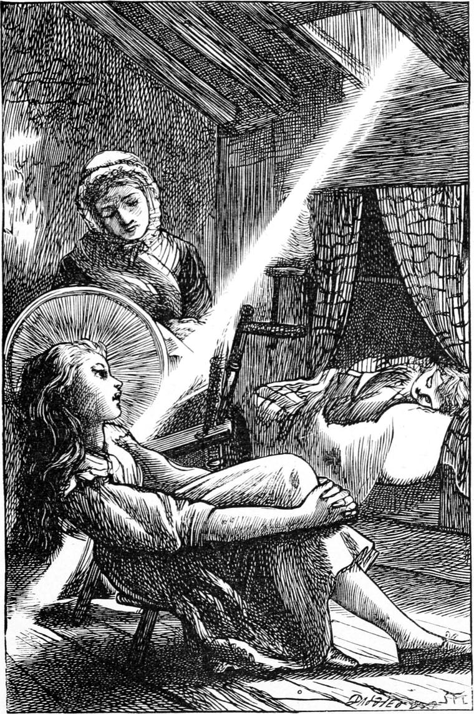

Elsie Duff’s father was a farm-labourer, with a large family. He was what is called a cottar in Scotland, which name implies that of the large farm upon which he worked for yearly wages he had a little bit of land to cultivate for his own use. His wife’s mother was Grannie Gregson. She was so old that she needed someone to look after her, but she had a cottage of her own in the village, and would not go and live with her daughter, and, indeed, they were not anxious to have her, for she was not by any means a pleasant person. So there was no help for it: Elsie must go and be her companion. It was a great trial to her at first, for her home was a happy one, her mother being very unlike her grandmother; and, besides, she greatly preferred the open fields to the streets of the village. She did not grumble, however, for where is the good of grumbling where duty is plain, or even when a thing cannot be helped? She found it very lonely though, especially when her grannie was in one of her gloomy moods. Then she would not answer a question, but leave the poor girl to do what she thought best, and complain of it afterwards. This was partly the reason why her parents, towards the close of the spring, sent a little brother, who was too delicate to be of much use at home, to spend some months with his grannie, and go to school. The intention had been that Elsie herself should go to school, but what with the cow and her grandmother together she had not been able to begin. Of course grannie grumbled at the proposal, but, as Turkey, my informant on these points, explained, she was afraid lest, if she objected, they should take Elsie away and send a younger sister in her place. So little Jamie Duff came to the school.
He was a poor little white-haired, red-eyed boy, who found himself very much out of his element there. Some of the bigger boys imagined it good fun to tease him; but on the whole he was rather a favourite, for he looked so pitiful, and took everything so patiently. For my part, I was delighted at the chance of showing Elsie Duff some kindness through her brother. The girl’s sweetness clung to me, and not only rendered it impossible for me to be rude to any girl, but kept me awake to the occurrence of any opportunity of doing something for her sake. Perceiving one day, before the master arrived, that Jamie was shivering with cold, I made way for him where I stood by the fire; and then found that he had next to nothing upon his little body, and that the soles of his shoes were hanging half off. This in the month of March in the north of Scotland was bad enough, even if he had not had a cough. I told my father when I went home, and he sent me to tell Mrs. Mitchell to look out some old garments of Allister’s for him; but she declared there were none. When I told Turkey this he looked very grave, but said nothing. When I told my father, he desired me to take the boy to the tailor and shoemaker, and get warm and strong clothes and shoes made for him. I was proud enough of the commission, and if I did act the grand benefactor a little, I have not yet finished the penance of it, for it never comes into my mind without bringing its shame with it. Of how many people shall I not have to beg the precious forgiveness when I meet them in the other world! For the sake of this penal shame, I confess I let the little fellow walk behind me, as I took him through the streets. Perhaps I may say this for myself, that I never thought of demanding any service of him in return for mine: I was not so bad as that. And I was true in heart to him notwithstanding my pride, for I had a real affection for him. I had not seen his sister—to speak to I mean—since that Sunday night.
One Saturday afternoon, as we were having a game something like hare and hounds, I was running very hard through the village, when I set my foot on a loose stone, and had a violent fall. When I got up, I saw Jamie Duff standing by my side, with a face of utter consternation. I discovered afterwards that he was in the way of following me about. Finding the blood streaming down my face, and remarking when I came to myself a little that I was very near the house where Turkey’s mother lived, I crawled thither, and up the stairs to her garret, Jamie following in silence. I found her busy as usual at her wheel, and Elsie Duff stood talking to her, as if she had just run in for a moment and must not sit down. Elsie gave a little cry when she saw the state I was in, and Turkey’s mother got up and made me take her chair while she hastened to get some water. I grew faint, and lost my consciousness. When I came to myself I was leaning against Elsie, whose face was as white as a sheet with dismay. I took a little water and soon began to revive.
When Turkey’s mother had tied up my head, I rose to go home, but she persuaded me to lie down a while. I was not unwilling to comply. What a sense of blissful repose pervaded me, weary with running, and perhaps faint with loss of blood, when I stretched myself on the bed, whose patchwork counterpane, let me say for Turkey’s mother, was as clean as any down quilt in chambers of the rich. I remember so well how a single ray of sunlight fell on the floor from the little window in the roof, just on the foot that kept turning the spinning-wheel. Its hum sounded sleepy in my ears. I gazed at the sloping ray of light, in which the ceaseless rotation of the swift wheel kept the motes dancing most busily, until at length to my half-closed eyes it became a huge Jacob’s ladder, crowded with an innumerable company of ascending and descending angels, and I thought it must be the same ladder I used to see in my dream. The drowsy delight which follows on the loss of blood possessed me, and the little garret with the slanting roof, and its sloping sun-ray, and the whirr of the wheel, and the form of the patient woman that span, had begun to gather about them the hues of Paradise to my slowly fading senses, when I heard a voice that sounded miles away, and yet close to my ear:

“Elsie, sing a little song, will you?”
I heard no reply. A pause followed, and then a voice, clear and melodious as a brook, began to sing, and before it ceased, I was indeed in a kind of paradise.
But here I must pause. Shall I be breaking my promise of not a word of Scotch in my story, if I give the song? True it is not a part of the story exactly, but it is in it. If my reader would like the song, he must have it in Scotch or not at all. I am not going to spoil it by turning it out of its own natural clothes into finer garments to which it was not born—I mean by translating it from Scotch into English. The best way will be this: I give the song as something extra—call it a footnote slipped into the middle of the page. Nobody needs read a word of it to understand the story; and being in smaller type and a shape of its own, it can be passed over without the least trouble.
SONG
Wi’ a clip o’ the sunshine atween his wings;
Whaur the birks[2] are a’ straikit wi’ fair munelicht,
And the broom hings its lamps by day and by nicht;
Whaur the burnie comes trottin’ ower shingle and stane,
Liltin’ [3] bonny havers[4] til ’tsel alane;
And the sliddery[5] troot, wi’ ae soop o’ its tail,
Is awa’ ‘neath the green weed’s swingin’ veil!
Oh! the bonny, bonny dell, whaur I sang as I saw
The yorlin, the broom, an’ the burnie, an’ a’!
Luikin’ oot o’ their leaves like wee sons o’ the sun;
Whaur the wild roses hing like flickers o’ flame,
And fa’ at the touch wi’ a dainty shame;
Whaur the bee swings ower the white clovery sod,
And the butterfly flits like a stray thoucht o’ God;
Whaur, like arrow shot frae life’s unseen bow,
The dragon-fly burns the sunlicht throu’!
Oh! the bonny, bonny dell, whaur I sang to see
The rose and the primrose, the draigon and bee!
As gin she war hearin’ a soundless tune,
Whan the flowers an’ the birds are a’ asleep,
And the verra burnie gangs creepy-creep;
Whaur the corn-craik craiks in the lang lang rye,
And the nicht is the safter for his rouch cry;
Whaur the wind wad fain lie doon on the slope,
And the verra darkness owerflows wi’ hope!
Oh! the bonny, bonny dell, whaur, silent, I felt
The mune an’ the darkness baith into me melt.
Sayin’, Here awa’, there awa’, baud awa’, sin!
Wi’ the licht o’ God in his flashin’ ee,
Sayin’, Darkness and sorrow a’ work for me!
Whaur the lark springs up on his ain sang borne,
Wi’ bird-shout and jubilee hailin’ the morn;
For his hert is fu’ o’ the hert o’ the licht,
An’, come darkness or winter, a’ maun be richt!
Oh! the bonny, bonny dell, whaur the sun luikit in,
Sayin’, Here awa’, there awa’, hand awa’, sin.
Wi’ Jeanie aside me, sae sweet and sae shy!
Whaur the wee white gowan wi’ reid reid tips,
Was as white as her cheek and as reid as her lips.
Oh, her ee had a licht cam frae far ’yont the sun,
And her tears cam frae deeper than salt seas run!
O’ the sunlicht and munelicht she was the queen,
For baith war but middlin’ withoot my Jean.
Oh! the bonny, bonny dell, whaur I used to lie
Wi’ Jeanie aside me, sae sweet and sae shy!
A’ day and a’ nicht, luikin’ up to the skies;
Whaur the sheep wauk up i’ the summer nicht,
Tak a bite, and lie doon, and await the licht;
Whaur the psalms roll ower the grassy heaps,
And the wind comes and moans, and the rain comes and
weeps!
For she’s up and awa’ up the angels’ stair.
Oh! the bonny, bonny dell, whaur the kirkyard lies,
And the stars luik doon, and the nicht-wind sighs!
[Footnote 1: The Yellow-hammer.]
[Footnote 2: Birch-trees.]
[Footnote 3: Singing.]
[Footnote 4: Nonsense.]
[Footnote 5: Slippery.]
Elsie’s voice went through every corner of my brain: there was singing in all its chambers. I could not hear the words of the song well enough to understand them quite; but Turkey gave me a copy of them afterwards. They were the schoolmaster’s work. All the winter, Turkey had been going to the evening school, and the master had been greatly pleased with him, and had done his best to get him on in various ways. A friendship sprung up between them; and one night he showed Turkey these verses. Where the air came from, I do not know: Elsie’s brain was full of tunes. I repeated them to my father once, and he was greatly pleased with them.
On this first acquaintance, however, they put me to sleep; and little Jamie Duff was sent over to tell my father what had happened. Jamie gave the message to Mrs. Mitchell, and she, full of her own importance, must needs set out to see how much was the matter.
I was dreaming an unutterably delicious dream. It was a summer evening. The sun was of a tremendous size, and of a splendid rose-colour. He was resting with his lower edge on the horizon, and dared go no farther, because all the flowers would sing instead of giving out their proper scents, and if he left them, he feared utter anarchy in his kingdom before he got back in the morning. I woke and saw the ugly face of Mrs. Mitchell bending over me. She was pushing me, and calling to me to wake up. The moment I saw her I shut my eyes tight, turned away, and pretended to be fast asleep again, in the hope that she would go away and leave me with my friends.
“Do let him have his sleep out, Mrs. Mitchell,” said Turkey’s mother.
“You’ve let him sleep too long already,” she returned, ungraciously. “He’ll do all he can, waking or sleeping, to make himself troublesome. He’s a ne’er-do-well, Ranald. Little good’ll ever come of him. It’s a mercy his mother is under the mould, for he would have broken her heart.”
I had come to myself quite by this time, but I was not in the least more inclined to acknowledge it to Mrs. Mitchell.
“You’re wrong there, Mrs. Mitchell,” said Elsie Duff; and my reader must remember it required a good deal of courage to stand up against a woman so much older than herself, and occupying the important position of housekeeper to the minister. “Ranald is a good boy. I’m sure he is.”
“How dare you say so, when he served your poor old grandmother such a wicked trick? It’s little the children care for their parents nowadays. Don’t speak to me.”
“No, don’t, Elsie,” said another voice, accompanied by a creaking of the door and a heavy step. “Don’t speak to her, Elsie, or you’ll have the worst of it. Leave her to me.—If Ranald did what you say, Mrs. Mitchell, and I don’t deny it, he was at least very sorry for it afterwards, and begged grannie’s pardon; and that’s a sort of thing you never did in your life.”
“I never had any occasion, Turkey; so you hold your tongue.”
“Now don’t you call me Turkey. I won’t stand it. I was christened as well as you.”
“And what are you to speak to me like that? Go home to your cows. I dare say they’re standing supperless in their stalls while you’re gadding about. I’ll call you Turkey as long as I please.”
“Very well, Kelpie—that’s the name you’re known by, though perhaps no one has been polite enough to use it to your face, for you’re a great woman, no doubt—I give you warning that I know you. When you’re found out, don’t say I didn’t give you a chance beforehand.”
“You impudent beggar!” cried Mrs. Mitchell, in a rage. “And you’re all one pack,” she added, looking round on the two others. “Get up, Ranald, and come home with me directly. What are you lying shamming there for?”
As she spoke, she approached the bed; but Turkey was too quick for her, and got in front of it. As he was now a great strong lad, she dared not lay hands upon him, so she turned in a rage and stalked out of the room, saying,
“Mr. Bannerman shall hear of this.”
“Then it’ll be both sides of it, Mrs. Mitchell,” I cried from the bed; but she vanished, vouchsafing me no reply.
Once more Turkey got me on his back and carried me home. I told my father the whole occurrence. He examined the cut and plastered it up for me, saying he would go and thank Turkey’s mother at once. I confess I thought more of Elsie Duff and her wonderful singing, which had put me to sleep, and given me the strange lovely dream from which the rough hands and harsh voice of the Kelpie had waked me too soon.
After this, although I never dared go near her grandmother’s house alone, I yet, by loitering and watching, got many a peep of Elsie. Sometimes I went with Turkey to his mother’s of an evening, to which my father had no objection, and somehow or other Elsie was sure to be there, and we spent a very happy hour or two together. Sometimes she would sing, and sometimes I would read to them out of Milton—I read the whole of Comus to them by degrees in this way; and although there was much I could not at all understand, I am perfectly certain it had an ennobling effect upon every one of us. It is not necessary that the intellect should define and separate before the heart and soul derive nourishment. As well say that a bee can get nothing out of a flower, because she does not understand botany. The very music of the stately words of such a poem is enough to generate a better mood, to make one feel the air of higher regions, and wish to rise “above the smoke and stir of this dim spot”. The best influences which bear upon us are of this vague sort—powerful upon the heart and conscience, although undefined to the intellect.
But I find I have been forgetting that those for whom I write are young—too young to understand this. Let it remain, however, for those older persons who at an odd moment, while waiting for dinner, or before going to bed, may take up a little one’s book, and turn over a few of its leaves. Some such readers, in virtue of their hearts being young and old both at once, discern more in the children’s books than the children themselves.